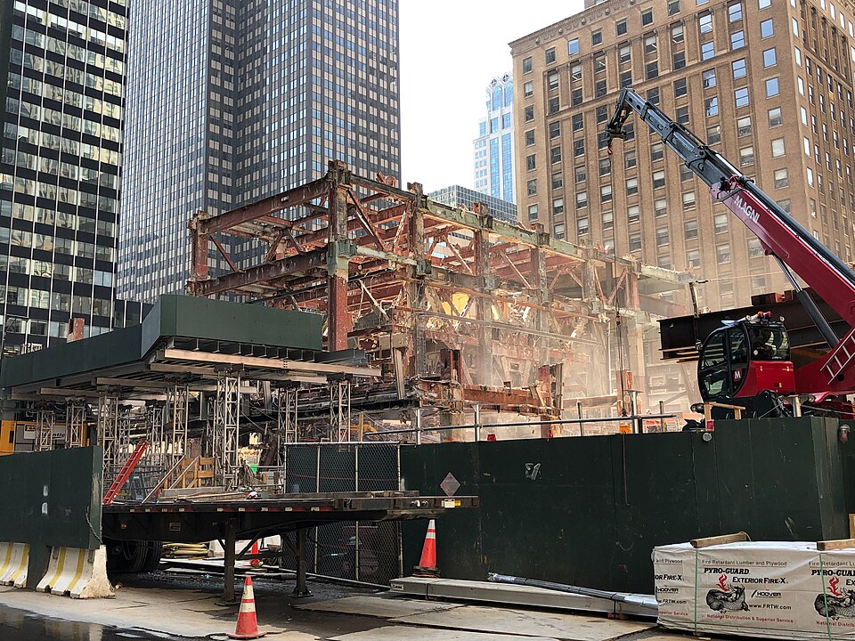

आवेदन के दो दशक बाद भी भारत को क्यों नहीं मिल पाई एपेक की सदस्यता?
एशिया पैसिफिक इकनॉमिक कोऑपरेशन (एपेक) शिखर सम्मेलन चीन में जारी है, लेकिन भारत आवेदन के बावजूद इसका हिस्सा नहीं है। कूटनीतिक और व्यापारिक वजहों से भारत की सदस्यता अब तक अटकी हुई है।
एशिया पैसिफिक इकनॉमिक कोऑपरेशन (एपेक) का शिखर सम्मेलन 18-19 नवंबर को चीन के ग्वांगडोंग प्रांत के शेनझेन में आयोजित किया जा रहा है। एशिया की तीसरी सबसे बड़ी अर्थव्यवस्था होने के बावजूद भारत इस संगठन का सदस्य नहीं है। भारत ने करीब दो दशक पहले एपेक की सदस्यता के लिए औपचारिक आवेदन किया था, लेकिन उसे अब तक सफलता नहीं मिली है।
पूर्व विदेश सचिव और राजनयिक श्याम सरन के लेख के अनुसार, अमेरिका भारत की सदस्यता का सबसे बड़ा विरोधी रहा है। वॉशिंगटन ने अपनी शर्तों और व्यापार वार्ताओं में दबाव बनाने के लिए इसका इस्तेमाल किया। इसके अलावा, अमेरिका का रुख रहा है कि एपेक के भीतर सदस्यता का विस्तार करने पर सक्रिय रूप से विचार नहीं किया जा रहा है।
भारत ने साल 2007 में एपेक की सदस्यता के लिए औपचारिक आवेदन किया था और सदस्य देशों से समर्थन जुटाने के प्रयास किए थे। हालांकि, संगठन की सदस्यता के विस्तार को लेकर समय-सीमा और कूटनीतिक प्राथमिकताओं के चलते यह मामला आगे नहीं बढ़ सका।
और पढ़ें

अंतरराष्ट्रीयअमेरिकी बैंक जेपी मॉर्गन पर साइबर हमला, 16 हजार ग्राहकों का डेटा लीक
अमेरिकी बैंक जेपी मॉर्गन ने थर्ड पार्टी वेंडर्स पर साइबर हमले का खुलासा किया है। इस घटना में करीब 16 हजार ग्राहकों का निजी डेटा लीक होने की आशंका जताई जा रही है।
 अंतरराष्ट्रीय
अंतरराष्ट्रीयसोमालिया ने यूएई के राजदूत को निष्कासित किया, 72 घंटे में देश छोड़ने का आदेश
सोमालिया सरकार ने संप्रभुता के उल्लंघन का आरोप लगाते हुए यूएई के राजदूत को 72 घंटे में देश छोड़ने का आदेश दिया है और अपने राजदूत को भी वापस बुला लिया है।
अंतरराष्ट्रीयबांग्लादेश में हिंसा पर पीएम तारिक रहमान का विदेश से साजिश का आरोप
बांग्लादेश के प्रधानमंत्री तारिक रहमान ने पूर्व पीएम शेख हसीना और उनके समर्थकों पर विदेश से हिंसा और आगजनी की साजिश रचने का आरोप लगाया है।
अंतरराष्ट्रीयभारत-जापान 2+2 बैठक: पहली बार भारतीय रेंज में लाइव फायरिंग करेगी जापानी सेना
टोक्यो में हुई चौथी भारत-जापान 2+2 मंत्री स्तरीय बैठक में रक्षा और सामरिक सहयोग बढ़ाने पर सहमति बनी। जापानी सेना भारत में पहली बार लाइव फायरिंग अभ्यास करेगी और दोनों देश रक्षा तकनीक तथा आतंकवाद के खिलाफ मिलकर काम करेंगे।